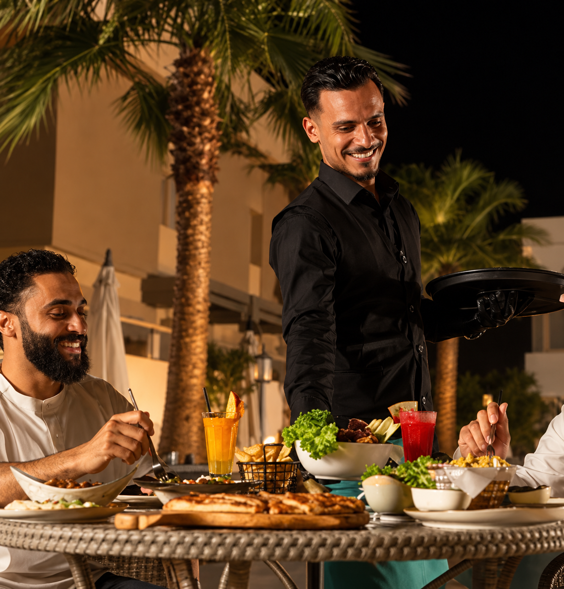

Jemný cizrnový krém s tahini, olivovým olejem a čerstvou petrželkou.
149 Kč
Pečený lilek s tahini, citronem, česnekem a granátovým jablkem.
159 Kč
Křupavé cizrnové kuličky s bylinkami, orientálním kořením a tahini omáčkou.
169 Kč
Marinované kuřecí maso s arabskou rýží, česnekovou omáčkou a zeleninovým salátem.
289 Kč
Grilované jehněčí šišky s orientálním kořením, rýží a jogurtovým dipem.
349 Kč
Výběr grilovaného kuřecího a jehněčího masa s koftou, rýží a omáčkami.
429 Kč
Tradiční orientální dezert z křupavého těsta, jemného sýra a pistácií.
159 Kč
Vrstvené filo těsto plněné pistáciemi, ořechy a zalité sladkým sirupem.
129 Kč
Jemný mléčný pudink s růžovou vodou a drcenými pistáciemi.
119 Kč